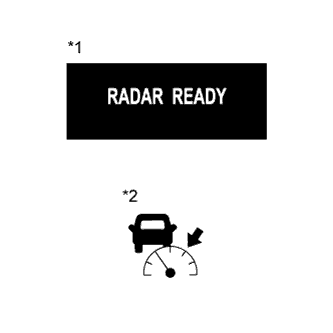
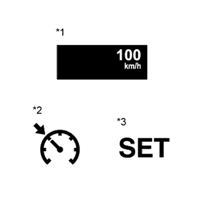
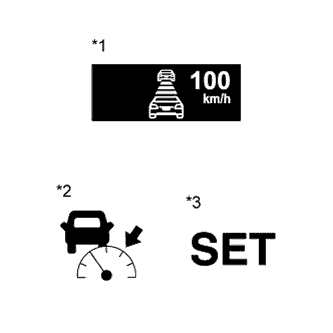

DYNAMIC RADAR CRUISE CONTROL SYSTEM > SYSTEM DESCRIPTION |
| GENERAL |
The dynamic radar cruise control system has 2 cruise control modes: constant speed control mode and vehicle-to-vehicle distance control mode.
If there is a vehicle ahead in the same lane, the system maintains the vehicle distance that has been set by the driver. If the system detects a vehicle driving at a slower speed ahead while the driver is driving at a constant speed, it closes the throttle valve to decelerate. If further deceleration is required, the system controls the brake actuator in order to apply the brakes. Thereafter, if there are no vehicles ahead within the set vehicle-to-vehicle distance because either the vehicle ahead or the driver has changed lanes, the system accelerates slowly to reach the set vehicle speed and resumes driving at the constant speed.
The constant speed control mode is designed to maintain a constant cruising speed. The vehicle-to-vehicle distance control mode is designed to control cruising using a constant speed function, deceleration cruising function, follow-up cruising function and acceleration cruising function.
The millimeter wave radar sensor assembly and driving support ECU control the system while the vehicle-to-vehicle distance control mode is in operation and send signals to each actuator and ECU.
In vehicle-to-vehicle distance control mode, the dynamic radar cruise control system receives signals from the yaw rate sensor and steering angle sensor. Based on these signals, it then estimates curve radius and corrects the information on the preceding vehicle while turning. It can also adjust the brake control when approaching another vehicle.
This system judges the presence of a vehicle in front and the distance to it based on the signals from the millimeter wave radar sensor while the vehicle-to-vehicle distance control mode is in operation. Using this information, the system informs the driver of any danger with the warning buzzer, performs brake control and turns on the stop light when approaching the vehicle in front.
The following illustration shows an example under the following conditions: the vehicle speed is 100 km/h (62 mph) and the speed of the vehicle in front is 80 km/h (50 mph). The vehicle distance setting can be changed to 3 distances by operating the steering pad switch (distance control switch): long (approximately 50 m [160 ft.]), middle (approximately 40 m [130 ft.]) and short (approximately 30 m [100 ft.]) (when the vehicle speed is approximately 80 km/h [50 mph]).
| FUNCTION OF MAIN COMPONENTS |
| Item | Outline |
| Combination meter assembly (Cruise control indicator light) |
|
| Combination meter assembly (Cruise control SET indicator light) | Turns on when constant speed control is started by pushing the cruise control switch to -SET. |
| Combination meter assembly (Buzzer) | If the ECM or driving support ECU detects an automatic cancel signal while the vehicle is operating under cruise control, this buzzer sounds once to inform the driver. |
| Combination meter assembly (Master warning light) | If the ECM or driving support ECU detects an automatic cancel signal while the vehicle is operating under cruise control, this light comes on to inform the driver. |
| Combination meter assembly (Multi-information display) |
|
| Cruise control switch (ON-OFF switch) | Turns the cruise control system on/off. |
| Cruise control switch (Control switch) |
|
| Steering pad switch assembly (Distance control switch) | While the system is in vehicle-to-vehicle distance control mode, the driver can operate the steering pad switch (distance control switch) to select the vehicle-to-vehicle distance from 3 possible settings: long, middle and short. |
| Stop light switch assembly | Outputs the brake pedal status signal to the ECM which is then sent to the driving support ECU. |
| Windshield wiper switch assembly | Transmits windshield wiper switch information to the driving support ECU. |
| Millimeter wave radar sensor assembly | Emits radar waves forward, uses reflected waves for detecting the presence of a vehicle in front, vehicle-to-vehicle distance and relative speed and transmits this information to the driving support ECU. |
| Spiral with sensor cable sub-assembly | Detects the angle and direction of steering and transmits its signal to the driving support ECU. |
| Yaw rate sensor | Detects the yaw rate of the vehicle and transmits its signal to the driving support ECU. |
| Master cylinder solenoid (Skid control ECU) |
|
| Skid control buzzer | This buzzer sounds upon receiving the signal from the skid control ECU. |
| ECM |
|
| Park/neutral position switch | Outputs a shift position signal to the ECM which is then sent to the driving support ECU. |
| Throttle body assembly | Upon receiving a signal from the ECM, the throttle motor actuates the throttle valve. |
| Driving support ECU | While the system is in vehicle-to-vehicle distance control mode, the driving support ECU detects the vehicle in front based on the signal from the millimeter wave radar sensor. Then, the driving support ECU calculates the acceleration or deceleration rate in order to attain the target vehicle-to-vehicle distance and outputs request signals to the ECM and skid control ECU. |
| Vehicle speed sensor | A vehicle speed signal which is output from the skid control ECU is sent to the ECM via the combination meter assembly. |
| LIMIT CONTROL |
Low speed limit
The lower limit of the speed setting range is set at approximately 50 km/h (30 mph). The cruise control system cannot be set when the driving vehicle speed is below the low speed limit. Cruise control operation is automatically canceled when the vehicle speed decreases below the low speed limit (40 km/h [25 mph]) while the cruise control system is in operation. When the vehicle speed is increased above the low speed limit after the cruise control operation is canceled, pressing the +RES switch increases the vehicle speed to the stored speed.
High speed limit (Constant speed control mode)
The upper limit of the speed setting range is approximately 200 km/h (125 mph). The cruise control system cannot be set when the driving vehicle speed is over the high speed limit. Also, RESUME/ACCEL cannot be used to increase speed beyond the high speed limit.
High speed limit (Vehicle-to-vehicle distance control mode)
The upper limit of the speed setting range is approximately 170 km/h (105 mph). The cruise control system cannot be set when the driving vehicle speed is over the high speed limit. Also, RESUME/ACCEL cannot be used to increase speed beyond the high speed limit.
| CRUISE CONTROL OPERATION |
|  |
| *1 | Multi-information Display |
| *2 | Cruise Control Indicator Light (Vehicle-to-vehicle Distance Control Mode) |
MODE CONTROL
Pushing the cruise control switch to MODE for more than 1 second while driving in vehicle-to-vehicle distance control mode (RADAR READY is on) switches the dynamic radar cruise control system to the constant speed control mode.
|  |
SET CONTROL (Constant speed control mode)
The vehicle speed is stored and constant speed control is maintained when pushing the cruise control switch to -SET while driving with the vehicle speed within the set speed range (between the low and high speed limits) after pushing the cruise control switch on and entering the constant speed control mode (the cruise control indicator light and SET indicator light turn on).
| *1 | Multi-information Display |
| *2 | Cruise Control Indicator Light (Constant Speed Control Mode) |
| *3 | Cruise Control SET Indicator Light |
|  |
SET CONTROL (Vehicle-to-vehicle distance control mode)
The vehicle speed is stored and vehicle-to-vehicle control is maintained when pushing the cruise control switch to -SET while driving with the cruise control switch on (RADAR READY is on) and with the vehicle speed within the set speed range (between the low and high speed limits) (the cruise control indicator light and SET indicator light turn on).
| *1 | Multi-information Display |
| *2 | Cruise Control Indicator Light (Vehicle-to-vehicle Distance Control Mode) |
| *3 | Cruise Control SET Indicator Light |
COAST CONTROL (Constant speed control mode)
When the cruise control switch is pushed to -SET and held in that position while the cruise control system is operating, the ECM sends a throttle valve opening angle 0° demand signal to the throttle body. Then, the vehicle speed is stored and maintained when the cruise control switch is released.
COAST CONTROL (Vehicle-to-vehicle distance control mode)
When the cruise control switch is pushed to -SET and held while the vehicle-to-vehicle distance control mode is in operation, the stored vehicle speed decreases by approximately 5 km/h or 5 mph.
TAP-DOWN CONTROL (Constant speed control mode)
When tapping down the cruise control switch to -SET (for approximately 0.6 seconds) while the constant speed control mode is in operation, the stored vehicle speed decreases by approximately 1.6 km/h (1 mph). When the cruise control switch is pushed to -SET and the difference between the driving and stored vehicle speed is more than 5 km/h (3 mph), the vehicle speed is stored and constant speed control is maintained.
TAP-DOWN CONTROL (Vehicle-to-vehicle distance control mode)
When tapping down the cruise control switch to -SET (for approximately 0.6 seconds) while the vehicle-to-vehicle distance control mode is in operation, the stored vehicle speed decreases by approximately 1 km/h or 1 mph.
ACCELERATION CONTROL (Constant speed control mode)
When the cruise control switch is pushed to -SET and held in that position while the cruise control system is operating, the ECM sends a throttle valve opening angle 0° demand signal to the throttle body. Then, the vehicle speed is stored and maintained when the cruise control switch is released.
ACCELERATION CONTROL (Vehicle-to-vehicle distance control mode)
When the cruise control switch is pushed to +RES and held while the vehicle-to-vehicle distance control mode is in operation, the stored vehicle speed increases by approximately 5 km/h or 5 mph. Pushing the cruise control switch to +RES while following the vehicle in front with the vehicle-to-vehicle distance control mode on does not increase the actual vehicle speed, but changes only the set vehicle speed.
TAP-UP CONTROL (Constant speed control mode)
When tapping up the cruise control switch to +RES (for approximately 0.6 seconds) while the constant speed control mode is in operation, the stored vehicle speed increases by approximately 1.6 km/h (1 mph). However, when the difference between the driving and the stored vehicle speeds is more than 5 km/h (3 mph), the stored vehicle speed is not changed.
TAP-UP CONTROL (Vehicle-to-vehicle distance control mode)
When tapping up the cruise control switch to +RES (for approximately 0.6 seconds) while the vehicle-to-vehicle distance control mode is in operation, the stored vehicle speed increases by approximately 1 km/h or 1 mph.
SHIFT DOWN CONTROL
MANUAL CANCEL CONTROL
Performing any of the following cancels cruise control while it is in operation (the stored vehicle speed in the ECM is maintained).
RES (RESUME) CONTROL
| BRAKE CONTROL |
| AUTO CANCEL (FAIL-SAFE) |